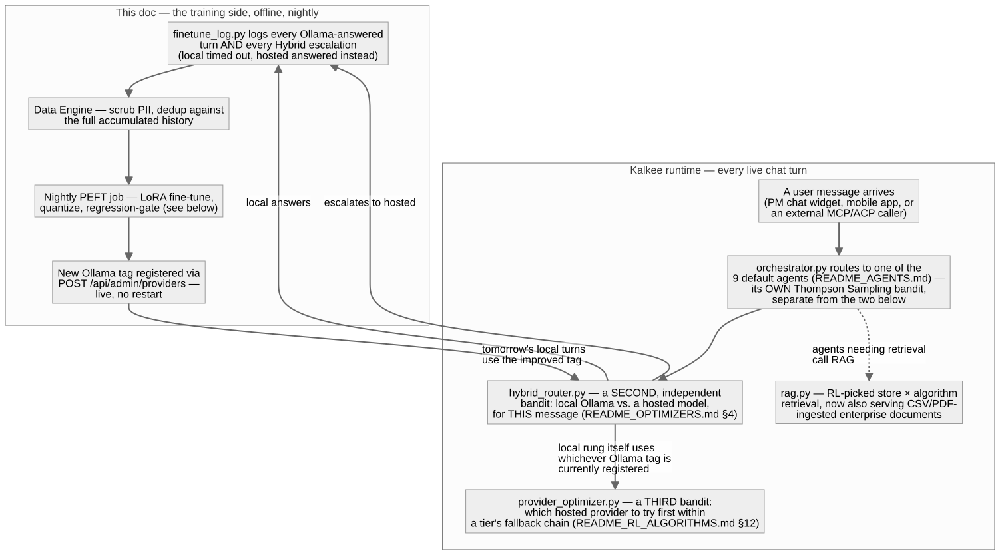

The local SLM pipeline — Enterprise Data → Data Engine → Base SLM → ... → Enterprise Software
Every stage of the local-model pipeline, what it actually does in this
codebase, and which file owns it — the "how does raw usage/enterprise
data actually turn into a better local model" story end to end. For the
per-message Hybrid-mode routing decision (which turn goes to the local
model at all), see ARCHITECTURE.md §8 and README_OPTIMIZERS.md §4;
this doc is specifically the training/data side.
The whole pipeline, one diagram
╔══════════════════════════════════════════════════════════════════╗
║ Kalkee runtime — every live chat turn passes through here, ║
║ producing the "real chat usage" this pipeline trains on ║
╚══════════════════════════════════════════╤═════════════════════╝
│ orchestrator.py routes to
│ 1 of 9 agents, hybrid_router.py
│ decides local Ollama vs. hosted
▼
Enterprise Data
(real chat usage + ingested
CSV / PDF / TXT / MD files)
│
▼
┌─────────────────────────┐
│ Collect enterprise │ YOUR curated prompt list —
│ prompts │ questions the business
└────────────┬─────────────┘ actually cares about
│
▼
┌─────────────────────────┐
│ Create ground truth │ framework/ground_truth.py
│ (grounded + reviewed) │ POST /api/v1/rag/ground-truth
└────────────┬─────────────┘ — DELIBERATE, not incidental
│
▼
┌───────────────┐
│ Data Engine │ scripts/data_engine.py
│ scrub PII + │ agent/finetune_log.py
│ persistent │
│ dedup store │
└───────┬───────┘
│
▼
┌───────────────────┐
│ Base SLM │ Ollama — config.py's
│ Qwen / SmolLM / │ OLLAMA_MODEL, default
│ Llama, 0.6B–4B │ llama3.2:1b, deploy
└─────────┬─────────┘ bumps to qwen2.5:3b
│
LoRA / QLoRA scripts/finetune_local_slm.py,
│ run nightly by deploy/nightly_
│ finetune.sh — see §4b below
▼
┌───────────────────┐
│ Domain SLM │ reward-weighted
│ (fine-tuned) │ supervised fine-tune
└─────────┬─────────┘
│
Quantization / Pruning GGUF/Q4_K_M (real) +
│ torch.nn.utils.prune (real,
▼ opt-in, honest limitation)
┌───────────────────┐
│ Algo-Kalkee-SLM │ scripts/convert_and_
│ (4-bit, your own │ register_ollama_model.sh
│ branded model) │ tag: algo-akanade-slm:<date>
└─────────┬─────────┘
│
┌───────────┴────────────┐
▼ ▼
RAG Agents
(rag.py, RL-picked (9 default agents,
store × algorithm) Thompson Sampling router)
│ │
└───────────┬────────────┘
▼
Enterprise Software
(the PM chatbot / Kalkee's
/api/v1/* surface)
│
│ POST /api/admin/providers registers the new
│ Ollama tag — hybrid_router.py's "local" arm
│ uses it on the very next message, no restart
▼
╔══════════════════════════════════════════════════════════════════╗
║ ...back to the SAME Kalkee runtime box at the top — this is a ║
║ CLOSED LOOP, not a one-shot pipeline. See the next section for ║
║ exactly which Kalkee components sit on which side of it. ║
╚══════════════════════════════════════════════════════════════════╝
How Kalkee fits around this pipeline — the closed loop
Everything above is the TRAINING side. It doesn't run in isolation —
it's one half of a loop that closes through Kalkee's actual runtime
components (README_AGENTS.md, README_RL_ALGORITHMS.md), each of
which is a SEPARATE bandit/mechanism from the ones this doc already
covers — worth being explicit about which is which, since three
different "which model/agent wins" decisions exist in this codebase and
conflating them is an easy mistake:

- Three bandits, three different decisions — don't conflate them:
orchestrator.py's router picks WHICH AGENT (of 9) handles a task;hybrid_router.pypicks LOCAL VS. HOSTED for a single message once an agent's already decided to call a model;provider_optimizer.pythen orders the HOSTED fallback chain if hosted was picked. All three reuse the sameLinearBanditCoremath (README_RL_ALGORITHMS.md§1) but keep entirely separate posteriors — an agent-routing decision never feeds the local/hosted bandit's learning, and vice versa. - The loop closes through a config change, not a code change. The
nightly job's output is a NEW Ollama tag (
qwen2.5-tuned:20260827, say) —hybrid_router.py's "local" arm keeps pointing at whichever tagconfig.py'sOLLAMA_MODEL(or the Admin AI Models UI) currently names. Promoting a fine-tune is changing that pointer, exactly the same mechanism as adding any other provider — never a redeploy. - RAG and the training pipeline share a document source, not a
bandit.
framework/rag.py's own store×algorithm bandit is unrelated to any of the three above — it's listed here only because ingested CSV/PDF documents (pipeline stage 1) feed both RAG retrieval AND, vialog_document_turn(), the training data.
Stage by stage — what's real, what file owns it
1. Enterprise Data
Two real sources feed the pipeline, not one:
- Real chat usage — every turn the local Ollama model actually
answers, plus every Hybrid-mode escalation (local timed out, a hosted
model answered instead — that answer is a real, worked example of
what the local model should have done itself). Logged by
agent/finetune_log.py'slog_ollama_turn()/log_hybrid_escalation_turn(). - Ingested documents — CSV, PDF, TXT, and MD files under
RAG_INGEST_DIR(framework/document_pipeline.py'singest_path()). CSV rows render asfield: value, field: valuetext (_extract_csv); PDFs extract real per-page text viapypdf(_extract_pdf) — a genuine optional dependency, with a clear, actionable skip reason ("pip install pypdf") if it's missing, never a crash. When a summary or follow-up prompts generated from ingested content is actually answered by the local Ollama rung,log_document_turn()logs that grounded Q&A too (reward 0.9 — strong signal, but without the retried/out_of_scope check a live chat turn gets, so a hair below the 1.0 a clean chat answer earns).
Both sources above are INCIDENTAL — whatever happened to get asked. Two more stages make the corpus DELIBERATE instead:
1b. Collect enterprise prompts
Not a piece of code — this is you, or whoever owns the fine-tune,
writing down the real questions the business actually wants the local
model to get right (a support team's most common tickets, a sales
team's recurring objections, the ten things new hires always ask). The
list itself is just list[str], the input to the next stage.
1c. Create ground truth (framework/ground_truth.py,
POST /api/v1/rag/ground-truth, Admin-only)
For each collected prompt: optionally retrieve real grounding context
from any already-registered store (an ingested CSV/PDF corpus, or
pm-index) via the SAME rag_optimizer.retrieve_with_optimizer()
pipeline summarize_document()/suggest_prompts() already use, then
ask the LLM router's "bulk" tier for one precise, reviewable answer —
grounded ONLY in the retrieved excerpts when a store is given, general
knowledge otherwise. Every result is returned to the caller for review
BEFORE anything is trusted, exactly like a summary. Only calls that
actually succeeded get logged, via a NEW finetune_log.py function,
log_ground_truth_turn() — fixed reward 1.0, the highest of any
logger here, and deliberately not gated to provider.startswith
("ollama") the way log_ollama_turn() is: the whole point is
distilling from whichever model produced the best verified answer
(often a stronger hosted tier), the same "teach the local model from
what actually worked" reasoning log_hybrid_escalation_turn() already
established. The logged messages include the retrieved context as a
system message when grounded — matching what real RAG-augmented
inference actually looks like — but never this stage's own "produce
verified training data" instruction, which the model will never
actually see in production.
2. Data Engine (scripts/data_engine.py)
The real curation step between raw logged data and what actually trains the model — and, deliberately, a persistent, ever-growing store, not a value recomputed from scratch each night:
scrub_pii()— redacts email addresses, API-key-shaped tokens, credit-card numbers, SSNs, and phone numbers from every example before it can ever be baked into model weights. This has to happen upstream of the actual gradient step — unlike a logging/display-layer redaction, a fine-tuned model can't un-learn a secret it was trained on.DataEngineStore— dedupes each new example against every example this store has ever kept, not just tonight's batch (cosine similarity on a cheap hashed bag-of-words vector,--dedup-thresholdconfigurable). A prompt logged Monday still blocks its near-duplicate from being re-added Thursday. Only genuinely new examples are appended to the durable JSONL corpus (--curated-path);ingest()returns exactly what was added.finetune_local_slm.pytrains on the curated store's full accumulated contents (capped at--max-examples, most recent first), not a single night's raw log —--no-data-enginebypasses all of this for a quick local test run only; the nightly cron should not set it.
3. Base SLM
Ollama, configured via config.py's OLLAMA_MODEL — defaults to
llama3.2:1b, with deploy/update_containers.sh bumping it to
qwen2.5:3b for the real deployed box. Both are comfortably inside the
0.6B–4B range this pipeline targets; any other Ollama-hosted model
(a different Qwen/Llama size, or another small open model) works via
the same config, no code change.
4. LoRA / QLoRA (scripts/finetune_local_slm.py)
- LoRA (default, CPU-friendly) —
r=8, alpha=16adapters on the attention + MLP projections, reward-weighted loss (RewardWeightedTrainer): a 1.0-reward example teaches more than a 0.7-reward one, not identically. Bounded by--max-minuteswall-clock, the real safety cutoff on an unattended nightly job (step count alone doesn't reliably bound CPU wall-clock time). - QLoRA (
--qlora, opt-in) — loads the base model 4-bit viabitsandbytes(nf4, double-quant) instead. Needs a real CUDA GPU — bitsandbytes' 4-bit kernels don't run on CPU — and refuses cleanly with an actionable message if requested without one, rather than a cryptic crash deep inside bitsandbytes. Not installed by default (seefinetune_requirements.txt's comment) since it only does anything useful on a GPU box, unlike everything else in that file.
Which hyperparameters to use — the 10th real optimizer
(scripts/peft_hyperparam_optimizer.py, --auto-hyperparams). Every
OTHER "which option, learned from outcomes" decision in this codebase
is the same LinearBanditCore Thompson Sampling primitive
(README_RL_ALGORITHMS.md); the hyperparameters above were the one
fixed exception — lora_r=8, alpha=16, min_reward=0.7, chosen once
and never revisited. --auto-hyperparams closes that gap: a bandit
over three named presets (conservative / balanced / aggressive —
bundling rank+alpha+reward-threshold together, since they interact)
picks tonight's configuration from context = [curated example count,
average reward], and scripts/eval/regression_gate.py --update-peft-bandit
feeds its own new_score - old_score margin back as the reward once
tonight's fine-tune has actually been scored — the SAME regression gate
that decides whether to promote it. Off by default (the fixed values
above are unchanged unless both flags are set); persisted to a plain
JSON file (--peft-bandit-state), not bandit_persistence.py's
DynamoDB-backed store, since this standalone script has no access to
the live app's database. 11 tests in test_peft_hyperparam_optimizer.py,
including that a repeatedly-winning arm is picked more often after a
fresh process reloads the persisted state from disk.
4b. The nightly job, mechanically (deploy/nightly_finetune.sh)
Stages 4 through 7 above describe what the training/quantization math does; this is how it actually gets RUN, unattended, every night, on the real deploy box:
crontab: 30 3 * * * /opt/algo-kaizen/nightly_finetune.sh
│
▼
docker cp ak-chatbot:/srv/data/finetune/ollama_turns.jsonl
(pulls today's log straight out of the LIVE chatbot
container — no separate export step, no shared volume)
│
no log yet? ──────► exit 0, log "nothing to do tonight",
(first night, or touch nothing already serving
local SLM never answered)
│
▼
docker run algo-kaizen-finetune (deploy/Dockerfile.finetune —
a SEPARATE image from the
three deployed ak-* services,
built once, reused nightly)
scripts.finetune_local_slm
--log-path .../ollama_turns.jsonl
--base-model Qwen/Qwen2.5-1.5B-Instruct (FINETUNE_BASE_MODEL)
--max-minutes 120 (FINETUNE_MAX_MINUTES)
│
too few reward≥threshold examples? ──► no merged/ dir produced,
(Data Engine's dedup can starve skip conversion, exit
a quiet night down to zero) cleanly, log why
│
▼ (merged/ exists)
scripts/convert_and_register_ollama_model.sh
GGUF convert → llama-quantize Q4_K_M →
new tag qwen2.5-tuned:<UTC-date> (base tag untouched) →
sanity check ("does it answer at all") →
eval/regression_gate.py vs. the CURRENT base tag,
same harness that picked the base model originally
│
fails the gate? ──────► tag exists on disk but is NEVER
registered — tonight's run is a
no-op from the running system's
point of view
│
▼ (passes)
POST /api/admin/providers — live, selectable, no restart;
hybrid_router.py's "local" arm starts using it on the very
next message that arm is picked for
│
▼
retention: keep only the last 3 nights' out/<date>/ directories
on disk (multi-GB checkpoints — this alone stops the deploy
box quietly filling up over weeks)
Every failure mode above — no data, no image, too little new data, a
failed regression gate — exits cleanly and changes nothing already
serving; the only way tonight's run ever changes runtime behavior is by
successfully clearing every one of those gates and reaching the
POST /api/admin/providers call. LOG=/opt/algo-kaizen/logs/ak-finetune.log
captures the full run (stdout+stderr) for a human to check in the
morning — this job pages nobody and blocks nothing if it fails silently
overnight, on purpose.
5. Domain SLM
The merged result of step 4 — model.merge_and_unload(), a plain HF
model directory. This is the point where the base model has genuinely
learned from this deployment's own real usage.
6. Quantization / Pruning
- Quantization (always, via the follow-on script) — GGUF f16 →
llama-quantize→ Q4_K_M. This is what actually ships to Ollama. - Pruning (
--prune-sparsity, opt-in, default0.0/off) — real global L1-unstructured magnitude pruning (torch.nn.utils.prune, no new dependency) over every linear layer, withprune.remove()making it permanent so the zeros survivesave_pretrained(). The actual measured sparsity is printed after, not just the requested fraction. Honest limitation, stated inprune_model()'s own docstring: the GGUF/Q4_K_M quantizer above does not specially exploit exact zeros for a smaller or faster result today — this is a real, verifiable transform without a proven inference-time win through this serving path yet, which is exactly why it defaults off.
7. Algo-Kalkee-SLM
scripts/convert_and_register_ollama_model.sh — GGUF conversion,
quantization, then an export step: the quantized GGUF + the
Modelfile that produced it + a metadata.json (base tag, quant type,
sanity-check/gate outcome, whether it was registered) are copied to
exported_models/<tag>/ — a real, standalone, portable artifact
outside both the script's own temp dir and Ollama's opaque blob store,
kept even when a candidate fails, so it stays inspectable rather than
just vanishing. Then: a new Ollama tag (the base tag is never touched),
a sanity check ("does it answer at all"), then
scripts/eval/regression_gate.py compares the new tag against the base
tag on the SAME eval harness used to pick the base model in the first
place. Only a tag that passes ever reaches POST /api/admin/providers
as "algo-akanade-slm" — live, selectable, no restart. See
README_SLM_GENERATION_LAYER.md for the full layer writeup (what's
already used vs. what this adds) and a quickstart LoRA example
(scripts/quickstart_lora_example/) for experimenting outside the
full nightly Docker pipeline.
8. RAG + Agents
Both consume the now-improved local model exactly like before — nothing downstream of "which Ollama tag answers" changes:
- RAG (
framework/rag.py) — RL-picked store × algorithm retrieval, now also fed by CSV/PDF-ingested enterprise documents (step 1) via the sameVectorStoreAdapterevery other content source uses. - Agents — Kalkee's 9 default agents (
README_AGENTS.md), any of which can be routed toget_llm_client(...)'s local Ollama rung the same waypm-agentalready is.
9. Enterprise Software
The PM chatbot and Kalkee's /api/v1/* orchestration API — the actual
consuming application every stage above exists to serve.
Trying it locally
cd backend
pip install -r requirements.txt # CSV/PDF ingestion works out of the box (pypdf)
python -m pytest tests/test_data_engine.py tests/test_document_pipeline.py -q
# The heavy training path — separate venv, see finetune_requirements.txt:
pip install -r scripts/finetune_requirements.txt
python scripts/finetune_local_slm.py --help
What's verified vs. what still needs the real deploy box
Same honesty standard finetune_local_slm.py's own module docstring
already holds itself to:
- Fully test-verified (pure Python, no heavy deps, real unit tests
in the main suite):
data_engine.py's scrub/dedup/persistent store,document_pipeline.py's CSV/PDF extraction and ingestion, and thelog_document_turn()wiring from document Q&A into the fine-tune log. - Syntax-verified, smoke-tested on a tiny model, NOT yet run
end-to-end on the real deploy box: the Data-Engine-integrated
training loop,
--prune-sparsity, and especially--qlora(which additionally needs a CUDA GPU this pipeline was never validated against at all). Re-run once on the real box with real accumulated data before trusting any of the three unattended.